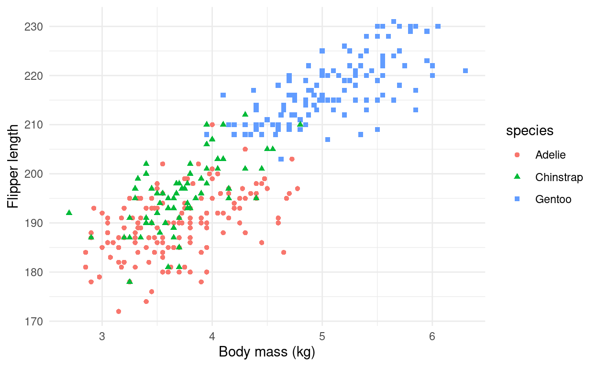

Exploring the new {palmerpenguins} dataset with {nakedpipe}…
Recently I came across nakedpipe on github - an R package with an intriguing name to say the least… After checking out the repo, I was very impressed and thought I’d share my notes here!
So what does nakedpipe do?
I’m sure most R users are familiar with magrittr’s pipe (%>%) operator. The %>% allows you to chain together multiple commands by piping forward an expression into a function like x %>% f, rather than f(x) Bache and Wickham (2014). The resulting code is usually very readable and easy to debug. nakedpipe adopts a similar style, but removes the need to use %>% after every function, and adds some additional logging/debugging features as well as being slightly faster than the magrittr implementation.
In order to try out the features in nakedpipe I used the new palmerpenguins dataset (KB, TD, and WR 2014) which provides a great test dataset and is a refreshing alternative the usual suspects, mtcars et al…
#remotes::install_github("allisonhorst/palmerpenguins")
#remotes::install_github("moodymudskipper/nakedpipe")
library(tidyverse)
library(palmerpenguins)
library(nakedpipe)
library(magrittr)
penguins <- penguinsA basic example looks like this:
penguins %.% {
filter(sex == "female")
select(1:5)
head(5)
}
# A tibble: 5 x 5
species island bill_length_mm bill_depth_mm flipper_length_mm
<fct> <fct> <dbl> <dbl> <int>
1 Adelie Torgersen 39.5 17.4 186
2 Adelie Torgersen 40.3 18 195
3 Adelie Torgersen 36.7 19.3 193
4 Adelie Torgersen 38.9 17.8 181
5 Adelie Torgersen 41.1 17.6 182You use the %.% operator to “pipe” into a sequence of functions, which are within {}. You can reduce the code further by removing the subset / filter argument like:
penguins %.% {
sex == "female"
select(1:5)
head(5)
}
# A tibble: 5 x 5
species island bill_length_mm bill_depth_mm flipper_length_mm
<fct> <fct> <dbl> <dbl> <int>
1 Adelie Torgersen 39.5 17.4 186
2 Adelie Torgersen 40.3 18 195
3 Adelie Torgersen 36.7 19.3 193
4 Adelie Torgersen 38.9 17.8 181
5 Adelie Torgersen 41.1 17.6 182Similarly, this works with transform / mutate calls. The use of the = sign implies a new column is being created, for example:
penguins %.% {
sex == "female"
body_mass_kg = body_mass_g/1000
select(body_mass_g, body_mass_kg)
head(5)
}
body_mass_g body_mass_kg
1 3800 3.800
2 3250 3.250
3 3450 3.450
4 3625 3.625
5 3200 3.200Assigning the result of a sequence of function can be done by using -> at the end of the sequence (outside of the {}) or using the %<.% operator at the start of the sequence.
penguins %.% {
sex == "female"
arrange(body_mass_g)
select(1,2,6)
head(5)
} -> small_penguins
# Or
small_penguins <- penguins
small_penguins %<.% {
sex == "female"
arrange(body_mass_g)
select(1,2,6)
head(5)
} Additionally, you can create outputs midway through the sequence of functions by using ~~:
penguins %.% {
sex == "female"
~~ . -> female_penguins
select(1:5)
head(5)
} -> x
head(female_penguins)
# A tibble: 6 x 7
species island bill_length_mm bill_depth_mm flipper_length_…
<fct> <fct> <dbl> <dbl> <int>
1 Adelie Torge… 39.5 17.4 186
2 Adelie Torge… 40.3 18 195
3 Adelie Torge… 36.7 19.3 193
4 Adelie Torge… 38.9 17.8 181
5 Adelie Torge… 41.1 17.6 182
6 Adelie Torge… 36.6 17.8 185
# … with 2 more variables: body_mass_g <int>, sex <fct>You can use %P.% to print the output of each step:
penguins %P.% {
sex == "female"
select(1:5)
head(5)
}%L.% prints out timings of each step in the sequence (Not particularly useful for this toy example, but would be for longer running code)
penguins %L.% {
sex == "female"
select(1:5)
head(5)
} -> y
penguins %L.% {
sex == "female"
user system elapsed
0.001 0.000 0.001
select(1:5)
user system elapsed
0.004 0.000 0.004
head(5)
user system elapsed
0.001 0.000 0.001
}%F.% lets you assign a function using the nakedpipe syntax:
penguin_func <- . %F.% {
group_by(species)
summarise(across(where(is.numeric), ~mean(., na.rm = TRUE)))
mutate(across(where(is.numeric), round, 2))
}
penguin_func(penguins)
# A tibble: 3 x 5
species bill_length_mm bill_depth_mm flipper_length_mm body_mass_g
<fct> <dbl> <dbl> <dbl> <dbl>
1 Adelie 38.8 18.4 190. 3701.
2 Chinstrap 48.8 18.4 196. 3733.
3 Gentoo 47.5 15.0 217. 5076.nakedpipe also plays well with ggplot:
penguins %.% {
body_mass_kg = body_mass_g / 1000
ggplot(aes(body_mass_kg, flipper_length_mm, shape = species, colour = species))
+ geom_point()
+ labs(y = "Flipper length", x = "Body mass (kg)")
+ theme_minimal()
}
There are some other useful things that nakepipe can do that I haven’t included here, such as %D.% operator for debugging, %..% for even faster performance and even a RStudio addin to convert your magrittr style code to the nakepipe syntax. Pretty cool!
If you’ve found any of these examples interesting, I’d highly recommend you check you that package repo (https://github.com/moodymudskipper/nakedpipe) and give it a try.
Bache, Stefan Milton, and Hadley Wickham. 2014. Magrittr: A Forward-Pipe Operator for R. https://CRAN.R-project.org/package=magrittr.
KB, Gorman, Williams TD, and Fraser WR. 2014. “Ecological Sexual Dimorphism and Environmental Variability Within a Community of Antarctic Penguins (Genus Pygoscelis).” PLoS ONE 9(3) (e90081): –13. https://doi.org/10.1371/journal.pone.0090081.
If you see mistakes or want to suggest changes, please create an issue on the source repository.